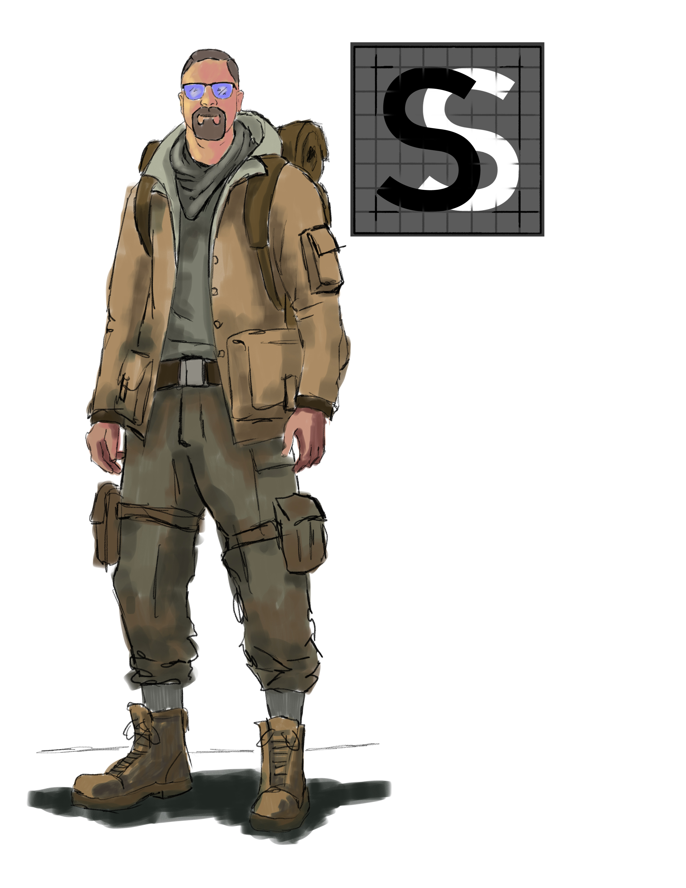

How I Discovered EcoFlow
I discovered EcoFlow after exploring various power solutions from brands like Goal Zero, Bluetti, and Jackery in my quest to lower my monthly electricity bill and achieve energy independence. What set EcoFlow apart was not only its innovative Smart Home Panel and comprehensive ecosystem that offered true automation and integration for daily energy management, but also its remarkable plug-and-play ease of use that made installation and setup incredibly straightforward. Unlike other brands that focused primarily on emergency backup, EcoFlow provided a complete solution for both reducing energy costs and seamlessly managing daily power consumption without the complexity typically associated with home energy systems.
Why Choose EcoFlow?
EcoFlow distinguishes itself with a powerful, versatile, and user-friendly ecosystem. From home backup to portable power on the go, their products are designed with cutting-edge features that set them apart.
Scalable & Expandable Power: A standout feature is the ability to expand your energy storage. Many units in the DELTA and RIVER series can connect to extra batteries, allowing you to customize your capacity for any situation. This ensures you have the power you need today with the option to grow your system tomorrow.
Unmatched Charging Versatility: Get back to full power in record time with industry-leading fast charging capabilities. For ultimate reliability, high-end models like the DELTA Pro can even integrate with a smart generator, giving you peace of mind during extended outages.
Smart, Clean, & Quiet Operation: Enjoy silent, fume-free power that’s good for your home and the environment. With EcoFlow's intuitive smartphone app, you can monitor and control your entire system from the palm of your hand, making power management simple and convenient.
A Solution for Every Need: EcoFlow's innovation covers the entire power spectrum. Whether you need a robust home backup system like the DELTA Pro Ultra or an extremely portable option for charging your devices on the move—like the Trail 300 or the Rapid series of MagSafe power banks or the RAPID Pro X—there is a solution built for you.
My Experience
Since integrating EcoFlow into my life, I’ve experienced the freedom of reliable, portable power. My main setup includes two DELTA Pros paired with two extra batteries and two smart generators. I use this system daily for load shifting—powering my home during peak utility hours and recharging during off-peak times. I’ve also added 2000W (2kWh) of EcoFlow solar panels to help keep things charged without relying on the grid. If things really get dire I can recharge my DELTA Pros with my 2 1800w Smart Genorators
For my man cave, I’ve found the perfect combo in a DELTA mini and River 2, which easily powers a space heater during the colder months. I’ve even incorporated other EcoFlow gear like their blankets, cups, lamp lights, and flashlight—bringing comfort and utility wherever I need it.
Since making the switch, my electric bill has gone down by about 55% month-over-month for the past two years. Based on my setup, I estimate a return on investment (ROI) of around five years, and I’m already two years in. Of course, your mileage may vary—actual ROI depends on total system cost, usage habits, and how much solar energy you can produce..
From full-home energy management to on-the-go comfort, EcoFlow has been a game-changer in my path toward energy independence.
Currernt Gear
- 2 Delta Pros
- 2 Delta Pros extra Batteries
- 3 Orginal Smart Generators
- 1 Orginal Smart Home Panel
- 1 Delta Mini
- 1 River 2
- 2kw solar panesl (split into 2 1600w 2s6p 100w arrays)
- 1 River 3 Plus
- 1 River 3 Plus 300EB extra battery
- 2 Rapid pack 5k magsafe battery packs
- 2 Rapid pack 10k magsafe battery packs
- 3 Rapid GaN chargers (20w, 30w, 65w)
- 1 Rapid Pro X
- 4 Ecoflow camp lights ( 3 Small ones one floor light)
- 3 EF blankes (2 pillow blankets and a water proof picnic blanket)
- 1 EF Scarf
- 3 EF cups (3 travel cups and 1 Titanium that works great to brew tea on my Solo Stove)
- 1 EF thermos
- 1 EF surge strip
- 1 EF storage box
- 1 EF Flashlight
- 1 EF River backpack
- 1 jackery explorer 200 (yes I do have other brands that I use as well)
Why These Calculators Exist
Understanding power needs can be complicated. In the many EcoFlow Facebook groups, one of the most common questions is "Can I use my River battery or Delta battery to power my specific device?" - from CPAP machines to RV coffee makers, new users often need help determining their power requirements.
I created these calculators (Blackout Buddy and Power Planner) to help others navigate their journey to energy independence. By sharing my experience and providing tools to make informed decisions.
I hope to help both newcomers to the EcoFlow community and those planning larger whole-home systems find the perfect power solution for their needs.
Don't Forget you can save 5% by using the code "solarscout" at checkout on Ecoflow.com
